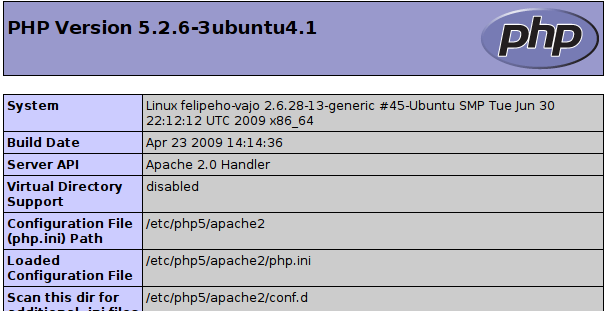
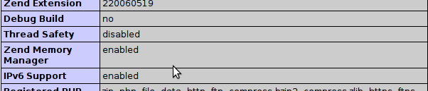

![[RSS]](HowToConfigureXDebug_arquivos/xml.png "Aggregate the RSS feed of the entire wiki")
How to configure XDebug
Table of Contents»
- How to configure XDebug
- Overview
- Other Useful Documents
- General Information
- How to on Linux
- Notes on Windows Configuration
- How to configure xdebug on WAMP
- Prerequisities
- Steps
- Troubleshooting
- Enable Xdebug logging
- Enable NetBeans PHP debugger logging
- Remote Debuging
- Where to ask?
- Other useful resources:
- FAQ
Overview
- These document describes the installation of xdebug. There are separate sections for Linux and Windows users. However, the information in How to on Linux may be interesting for Windows users as well. Please send your comments to users@php.netbeans.org if you have any comments or questions.
Other Useful Documents
- see installation, configuration instructions:
General Information
- Edit PHP Configuration - name of configuration file is php.ini
- The location of php.ini differs between operating systems, Linux distributions, types of installation (from packages or sources), and/or Windows-based solution stacks (WAMP, XAMP)
- Typically, more than one php.ini file exists
- Xdebug configuration is either inside php.ini or in another ini file often called xdebug.ini - this ini file is then shared between both configurations (Script and Local Web Server)
- Xdebug is incompatible with the Zend Optimizer and Zend Studio Debugger extensions. These extensions should be commented out. See user's comment:
[Zend] ;zend_extension_ts = "C:\xampp\php\zendOptimizer\lib\ZendExtensionManager.dll" ;zend_extension_manager.optimizer_ts = "C:\xampp\php\zendOptimizer\lib\Optimizer" ;zend_optimizer.enable_loader = 0 ;zend_optimizer.optimization_level=15 ;zend_optimizer.license_path =; Local Variables: ; tab-width: 4 ; Local Variables: ; tab-width: 4 ; End:
- NOTICE: From PHP 5.3 onwards, you need to use zend_extension and not zend_extension_ts.
How to on Linux
- e.g. Ubuntu files layout (xdebug configuration is in both php.ini files):
/etc/php5/
|-- apache2
| |-- conf.d -> ../conf.d
| |-- php.ini
| `-- php.ini.ucf-dist
|-- cli
| |-- conf.d -> ../conf.d
| |-- php.ini
| `-- php.ini.ucf-dist
`-- conf.d
|-- mysql.ini
|-- mysqli.ini
- alternative Ubuntu files layout (xdebug configuration is in xdebug.ini shared between both configurations. See article Xdebug On Ubuntu):
/etc/php5/
|-- apache2
| |-- conf.d -> ../conf.d
| |-- php.ini
| `-- php.ini.ucf-dist
|-- cli
| |-- conf.d -> ../conf.d
| |-- php.ini
| `-- php.ini.ucf-dist
`-- conf.d
|-- mysql.ini
|-- mysqli.ini
|-- xdebug.ini
- php.ini should contain at least following settings (see all settings).
zend_extension=/path/to/xdebug.so xdebug.remote_enable=1 xdebug.remote_handler=dbgp xdebug.remote_mode=req xdebug.remote_host=127.0.0.1 xdebug.remote_port=9000
- NOTICE: From PHP 5.3 onwards, you need to use zend_extension and not zend_extension_ts.
- /path/to/xdebug.so is just example. Check that the file really exists on given path.
- For Script verify that Xdebug appears in the Zend module lists after: php -m
- For Local Web Server verify that Xdebug appears in the Zend modules (not PHP Modules) after: : php -mf path_to_ini_file/php.ini
[PHP Modules] bcmath bz2 calendar ... [Zend Modules] Xdebug
- For Local Web Server you can alternatively create a phpinfo.php file containing the line '<?php phpinfo(); ?>', run and watch whether information about Xdebug will be displayed
- Optionally enable Xdebug logging by adding into php.ini also: xdebug.remote_log=/log_path/xdebug.log
- Optionally enable NetBeans PHP debugger logging by starting NetBeans with -J-Dorg.netbeans.modules.php.dbgp.level=400 or by editing netbeans.conf
netbeans/etc/ |-- netbeans.clusters |-- netbeans.conf `-- netbeans.import
- whenever php.ini is modified don't forget restart web server (not needed for Script)
- see Howto check xdebug installation, XDebug on Ubuntu
Notes on Windows Configuration
- php.ini location hint for Local Web Server for XAMP on Windows: c:\xamp\apache\bin\php.ini
- php.ini location hints for Script(CGI/CLI) for XAMP on Windows: c:\xampp\php\php.ini
- for Windows use zend_extension_ts instead of zend_extension (e.g. zend_extension_ts=c:\path\to\php_xdebug.dll). Again c:\path\to\php_xdebug.dll must exist.
- NOTICE: From PHP 5.3 onwards, you need to use zend_extension and not zend_extension_ts.
How to configure xdebug on WAMP
- installing xdebug on WAMP is a bit diferrent and requires another steps to sucesfully load module. I focus on the easiest use case, installation using precompiled .dll.
Prerequisities
- I assume these prerequisities:
- you have latest version of WAMP installed. That's WAMP 2.0 when writing this tutorial (Apr 15, 2009). These includes:
- Apache 2.2.11
- PHP 5.2.9-1
- I don't care about MySQL at this moment ..,
- you have latest version of WAMP installed. That's WAMP 2.0 when writing this tutorial (Apr 15, 2009). These includes:
Steps
- if you didn't customize your installation paths then you should find php in <wamp_folder>\bin
C:.
├───apache
│ <some folders>
├───mysql
│ <some folders>
└───php
└───php5.2.9-1
├───dev
├───ext
├───extras
│ ├───mibs
│ ├───openssl
│ └───pdf-related
└───PEAR
- folder ext is used for extension and we used it to copy xdebug's dll there. However, you can use whatever folder you want.
- download xdebug from http://www.xdebug.org/download.php. Carefully choose version you download! There is a description you should read on download page! I downloaded php_xdebug-2.0.4-5.2.8.dll for WAMP2 with prerequisities above. Consult our FAQ at the end of this page if you need more help on choosing a version.
- open your php.ini that is easily accesible from tray. Wamp tray icon -> PHP -> php.ini
- add following lines to your php.ini. Use full path! (change your .dll name to match your version, of course)
zend_extension_ts="C:/wamp/bin/php/php5.2.9-1/ext/php_xdebug-2.0.4-5.2.8.dll" xdebug.remote_enable=on xdebug.remote_handler=dbgp xdebug.remote_host=localhost xdebug.remote_port=9000
- NOTICE: From PHP 5.3 onwards, you need to use zend_extension and not zend_extension_ts.
- note that you always use zend_extension_ts unless you intentionally installed non thread safe apache version
- restart WAMP services (restart Apache is enough)
- open localhost (or WAMP server default page) and check if xdebug is between Loaded Extensions
- click on phpinfo() on default WAMP page or create file containing <? phpinfo() ?>. You should see the same as for Linux tutorial above:
- You can check your configuration using simple script written by Radek Matous and posted on blog.sun.com . If you are using WAMP then you don't have php on path, most probably. All you have to do is to copy this code to php file and then call it from browser with $_GET variable in url ?XDEBUG_SESSION_START=mysession. Let's say your file i called dbgtest.php and it's in web directory. All you have to do is type http://localhost/dbgtest.php?XDEBUG_SESSION_START=mysession.
- If xdebug is properly installed then script started in step 1. should print message like "connection established: Resource id #5". If no message is printed and the script is still running, then xdebug isn't installed properly or uses different port or whatever else. So, kill the running process and investigate where the problem is, but this is the other story.
<?php
$address = '127.0.0.1';
$port = 9000;
$sock = socket_create(AF_INET, SOCK_STREAM, 0);
socket_bind($sock, $address, $port) or die('Unable to bind');
socket_listen($sock);
$client = socket_accept($sock);
echo "connection established: $client";
socket_close($client);
socket_close($sock);
?>
Troubleshooting
- if something goes wrong then check your PHP Error Log that you can find after invoking WAMP context menu from system tray
- e,g,: WAMP icon -> PHP -> Error Log
- Probably typo or file was not found if you see this:
PHP Warning: PHP Startup: Unable to load dynamic library 'c:/wamp/bin/php/php5.2.9-1/ext/php_xdebug-2.0.4-5.2.8.dl' - The specified module could not be found. in Unknown on line 0
- You downloaded wrong version of php.ini if you see following:
PHP Warning: PHP Startup: Unable to load dynamic library 'c:/wamp/bin/php/php5.2.9-1/ext/php_xdebug-2.0.4-5.3.0-vc9.dll' - The application has failed to start because its side-by-side configuration is incorrect. Please see the application event log for more detail. in Unknown on line 0
- Do NOT use XAMPP 1.7.0. If you set up XDebug as described here, the Apache server crashes when you run or debug a file or project. The workaround prevents the IDE from stopping at breakpoints. XAMPP 1.7.1 is fine, with XDebug 2.0.4 VC 5.2 thread-safe.
- try to check Apache Error Log as well.
Enable Xdebug logging
by adding into php.ini: xdebug.remote_log=/log_path/xdebug.log (see http://www.xdebug.org/docs/all_settings) the content of log is in /log_path/xdebug.log (this path is just an example, for Windows something like: C:\... && xdebug must be writable )Enable NetBeans PHP debugger logging
helpful is to turn on the debugger-related logging and attach the log into Issuezilla as well.See following simple steps:
- Running NetBeans with logging turned on. You can do this by:
either adding the text:-J-Dorg.netbeans.modules.php.dbgp.level=400 to your $NB_BIN/etc/netbeans.conf, property netbeans_default_options
or running NetBeans directly with those parameters, like: $NB_BIN/bin/netbeans -J-Dorg.netbeans.modules.php.dbgp.level=400 - When NetBeans starts up, reproduce the bug, so it is logged into the log files.
- Then file a new issue (click this link) and attach (or just send me directly):
the content of IDE log file Menu -> View -> IDE Log File (or directly $YOUR_NB_USER_DIR/var/log/messages.log)
the content of the Output Window - Attach (or just send me directly) both log files xdebug.log and messages.log
Remote Debuging
- For Remote Web Server configuration Xdebug must be properly configured on remote server (not on local one)
- you need to have correctly configured property xdebug_remote.host on remote machine. The IP address of local machine has to be defined in this property. For example, you want to debug your source code on remote machine 192.168.0.1 using Netbeans installed on 192.168.0.2. You need to change xdebug.remote_host on 192.168.0.1 to xdebug.remote_host=192.168.0.2. If doesn't work verify you have port configured in xdebug.remote_port open on both machines.
Where to ask?
Other useful resources:
How to configure xdebug to work only on one virtual server ? - an online article on how to configure xdebug
Tutorial on how to configure Xdebug to work with phpDesigner 2008 - has screen shots perfect for those who are writing an essay about it.
FAQ
- what version of Xdebug should I download?
You need to get answers on few simple questions, firstly 1. whats your version of php? there are more ways to find this out either
$ php -v
PHP 5.2.6-3ubuntu4.1 with Suhosin-Patch 0.9.6.2 (cli) (built: Apr 23 2009 14:37:14)
Copyright (c) 1997-2008 The PHP Group
Zend Engine v2.2.0, Copyright (c) 1998-2008 Zend Technologies
with Xdebug v2.0.3, Copyright (c) 2002-2007, by Derick Rethans
or create a file
<? phpinfo(); ?>you should get output like below after running it in browser

Clearly my version of php is 5.2.6-3
2. Do I need Non Thread Safe or Thread Safe version? non-threaded use of PHP" for example the CLI, CGI or Apache 1.3 module threaded usage of PHP, for example the Apache 2 work MPM or the the ISAPI module
either run on Linux
$ apache2 -V Server version: Apache/2.2.11 (Ubuntu) Server built: Jun 11 2009 03:24:38 Server's Module Magic Number: 20051115:21 Server loaded: APR 1.2.12, APR-Util 1.2.12 Compiled using: APR 1.2.12, APR-Util 1.2.12 Architecture: 64-bit !!!Server MPM: Prefork!!! !!!threaded: no!!! !!!forked: yes (variable process count)!!! Server compiled with.... -D APACHE_MPM_DIR="server/mpm/prefork" -D APR_HAS_SENDFILE -D APR_HAS_MMAP -D APR_HAVE_IPV6 (IPv4-mapped addresses enabled) -D APR_USE_SYSVSEM_SERIALIZE -D APR_USE_PTHREAD_SERIALIZE -D SINGLE_LISTEN_UNSERIALIZED_ACCEPT -D APR_HAS_OTHER_CHILD -D AP_HAVE_RELIABLE_PIPED_LOGS -D DYNAMIC_MODULE_LIMIT=128 -D HTTPD_ROOT="" -D SUEXEC_BIN="/usr/lib/apache2/suexec" -D DEFAULT_PIDLOG="/var/run/apache2.pid" -D DEFAULT_SCOREBOARD="logs/apache_runtime_status" -D DEFAULT_LOCKFILE="/var/run/apache2/accept.lock" -D DEFAULT_ERRORLOG="logs/error_log" -D AP_TYPES_CONFIG_FILE="/etc/apache2/mime.types" -D SERVER_CONFIG_FILE="/etc/apache2/apache2.conf"
or on Windows
C:\wamp\bin\apache\Apache2.2.11\bin>httpd Server version: Apache/2.2.11 (Win32) Server built: Dec 10 2008 00:10:06 Server's Module Magic Number: 20051115:21 Server loaded: APR 1.3.3, APR-Util 1.3.4 Compiled using: APR 1.3.3, APR-Util 1.3.4 Architecture: 32-bit !!!Server MPM: WinNT!!! !!!threaded: yes (fixed thread count)!!! !!!forked: no !!! Server compiled with.... -D APACHE_MPM_DIR="server/mpm/winnt" -D APR_HAS_SENDFILE -D APR_HAS_MMAP -D APR_HAS_OTHER_CHILD -D AP_HAVE_RELIABLE_PIPED_LOGS -D DYNAMIC_MODULE_LIMIT=128 -D HTTPD_ROOT="/apache" -D SUEXEC_BIN="/apache/bin/suexec" -D DEFAULT_SCOREBOARD="logs/apache_runti -D DEFAULT_ERRORLOG="logs/error.log" -D AP_TYPES_CONFIG_FILE="conf/mime.types -D SERVER_CONFIG_FILE="conf/httpd.conf"
the other option is to have a look on phpinfo on

or you can use command line Linux:
$ php -i | grep "Thread Safety" Thread Safety => disabledWindows:
C:\wamp\bin\php\php5.2.9-2>php.exe -i -w phpinfo() PHP Version => 5.2.9-2 System => Windows NT FELIPEE-VISTA 6.0 build 6001 Build Date => Apr 9 2009 08:22:37 Configure Command => cscript /nologo configure.js "--enable-snapshot-build" "--enable-debug-pack" "--with-snapshot-template=d:\php-sdk\snap_5_2 vc6\x86\template" "--with-php-build=d:\php-sdk\snap_5_2\vc6\x86\php_build" "--with-pdo-oci=D:\php-sdk\oracle\instantclient10\sdk,shared" "--with oci8=D:\php-sdk\oracle\instantclient10\sdk,shared" Server API => Command Line Interface Virtual Directory Support => enabled Configuration File (php.ini) Path => C:\Windows Loaded Configuration File => C:\wamp\bin\php\php5.2.9-2\php.ini Scan this dir for additional .ini files => (none) additional .ini files parsed => (none) PHP API => 20041225 PHP Extension => 20060613 Zend Extension => 220060519 Debug Build => no Thread Safety => enabled Zend Memory Manager => enabled IPv6 Support => enabled Registered PHP Streams => php, file, data, http, ftp, compress.zlib Registered Stream Socket Transports => tcp, udp Registered Stream Filters => convert.iconv.*, string.rot13, string.toupper, string.tolower, string.strip_tags, convert.*, consumed, zlib.*
My Thread Safety is apparently disabled so I don't need thread safe version. If you use Windows you most probably need thread safe version .
And that's it! Go to Xdebug download page and download appropriate file. I need veersion marked as 5.2. and NonThreadSafe.
Attachments
| phpinfo_phpversion.png | 33196 bytes | |
| phpinfo_thread_safety.png | 12232 bytes | |
| xdebug.png | 19057 bytes |
{kind=link}
{kind=link}
{kind=link}
{kind=link}
{kind=link}
{kind=link}